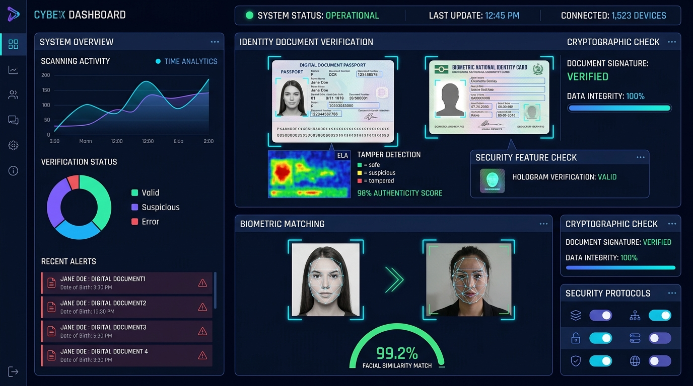

Engineering Practical Intelligent Systems & Scalable ML Pipelines.
I'm Abhinav Anand, an AI/ML Engineer and 2nd-year B.Tech CSE (AI/ML) student at Lovely Professional University. I architect and implement predictive machine learning models, multimodal forensic document screening, and resilient computer vision systems with verifiable engineering rigor.
AI Systems Knowledge Map
An interactive technical map of my engineering ecosystem. Filter by domain or click any node to inspect operational techniques, mathematical algorithms, and real project implementations.
Select Any Skill Node
Click on any technology or algorithm node on the left to reveal its mathematical role, verified tools, and the exact portfolio projects where it is implemented.
Every technology listed represents hands-on project implementation with working source repositories.
Selected Engineering Work
An engineering index of forensic screening systems, predictive classifiers, and multimodal platforms. Select any project from the left registry to inspect technical challenges, algorithmic solutions, and verified code repositories.
DocuShield AI: Multimodal Forensic Document Screening
Enterprise-grade forensic screening platform verifying authenticity across 5 identity categories (Passports, Visas, Aadhaar, Driving Licences, Travel Permits). Detects digital tampering via Error Level Analysis (ELA) and copy-move forgery, parses ICAO Doc 9303 MRZ check digits and Verhoeff checksums, and cross-matches live facial biometrics.

How I Build Intelligent Systems
An engineering perspective on end-to-end model development. Click through any lifecycle stage to review practical engineering considerations, diagnostic tools, and real project implementations.
Algorithmic Telemetry & Credentials
Telemetry tracking asymptotic problem solving in C++ alongside verified academic credentials in memory management, machine learning, and relational schema engineering.
| Problem Name | Runtime / Lang | Status | Timestamp |
|---|
Engineering Build Log
Concise technical notes documenting architectural decisions, failure modes, and practical lessons from building machine learning systems.
Initiate Transmission
Whether you're exploring engineering candidates for AI/ML roles, research collaborations, or discussing scalable machine learning architecture — my transmission channels are open.
Targeting AI/ML Engineering internships and junior machine learning roles. Immediate availability for remote and on-site opportunities.